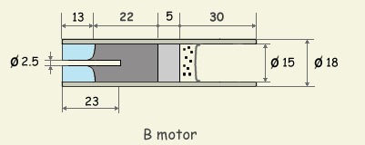

Az itt következő motor a C motrokhoz nagyon hasonló felépítésű. A motor fala csomagolópapírból míg a fúvóka gipszből készül és üzemanyagként szintén a K66 keveréket használja. A motor méretei a szabványos B-kategóriás motrokéval azonos (18x70 mm), összimpulzus szerint szintén B kategóriába esik (kb. 4 Ns). A motor felépítése és méretei a mellékelt ábrán láthatóak. A C1 motorhoz képest a különbség csupán annyi, hogy a feleannyi üzemanyagot használ, így rövidebb az égési ideje és az összimpulzusa. Egy kis eltérés van a fúvóka felépítésében is, az egyszerűbb és gyorsabb előállítás kedvéért elmarad a divergens rész kialakítása. A B-motor, mint azt sejteni lehet, nem egy teljesítménybajnok, de kisebb rakéták röptetésére kiváló, valamint fúvókakísérletekre is alkalmas, mivel kevés üzemanyagot használ. Ez utóbbi meglehetősen fontos szempont lehet az amatőr gyakorlatban, hiszen az alapanyagok beszerzése nem mindig problémamentes. Ha pedig már van 18 mm-es motorfoglalattal ellátott rakétánk, akkor az egyaránt használható B illetve C motrokkal.
|  | 1. Ábra: B motor tervrajza (méretek mm-ben). |
A motorköpeny csomagolópapírból készül amit vízüveges CMC-vel ragasztunk össze. A csomagolópapír a papírtasakok készítéséhez is használt, barna színű, meglehetősen erős papír, valamivel vastagabb a nyomtatópapírnál. Természetesen a nyomtatópapír is megfelel a célnak, csupán picit nehezebb lesz a motor mert a nyomtatópapír fajsúlya valamivel nagyobb mint a csomagolópapíré. A CMC tapétragasztó, bármely háztartási boltban beszerezhető és rakétamotrok készítésére kiváló. A csomagolópapírból 7 cm széles és kb. 50 cm hosszú csíkot vágunk és teljes felületét bekenjük ragasztóval, kivéve az első néhány centimétert, hogy ne ragadjon a sablonra. Sablonként egy 15 mm külső átmérőjű rudat használunk. Ha a rúd fából van, tanácsos háztartási fóliával becsavarni mielőtt rátekernénk a papírcsíkot, így az nem fog ráragadni. A beragasztózott papírcsíkot a rakétatest oldalon leírt papírcsőkészítési metódus szerint eljárva csavarjuk a rúdra. Igyekezzünk minél szorosabban és pontosabban csavarni. A papírcsövek teljes kiszáradásához legalább egy nap szükséges szobahőmérsékleten. Kiszáradás után a papírcső külső átmérője 18 mm kell legyen.
A fúvóka gipszből készül, ami nagyon kopik, de működik és ez a lényeg "kezdő" motrok esetében. A fúvóka egy konvergens résszel ellátott 13 mm hosszú dugó, méretei a baloldali ábrán láthatóak. Elkészítéséhez szükséges C-motrok fúvókájához is használt konvergens sablon, azaz a fúvóka negatívja, amely segítségével kialakítjuk a megfelelő formát. A sablon méretei a mellékelt ábrán vannak feltüntetve. Előbb a fúvókanegatív konvergens részét helyezzük a papírcsőbe és 57 mm mélyen rögzítjük. Tanácsos a negatívot kissé beolajozni, így később könnyedén eltávolíthatóak mert nem tapad túlságosan a gipszhez. Ugyanezt a célt szolgálja a negatív végének befűrészelése is, amely lehetővé teszi, hogy egy csvarhúzóval megforgassuk a sablont, így segítve elő a gipsztől való elválást. Gipszporból vízzel puha pasztát keverünk, amit a papírcsövek végébe tömünk. Jó igyekezni, mert a gipsz néhány perc alatt megszilárdul. Lényeges, hogy a papírcsövek ne legyenek teljesen kiszáradva amikor a gipszet belenyomkodjuk, mivel száradás közben a papírcső kissá összehúzódik és megszorítja a gipszdugót. Így biztosan nem fordul elő, hogy a fúvókát kilőné a motor nyomása. A gipsz 20 - 30 perc alatt eléggé megkeményedik ahhoz, hogy kényelmesen ki tudjuk alakítani a fúvóka furatát. A negatívot legkönnyebben ugy távolíthatjuk el, hogy csavarhúzóval megforgatjuk, majd kikoppantjuk a papírcsőből. Egy 2,5 mm-es fúróval óvatosan átfúrjuk a gipszdugót, ügyelve, hogy minél inkább középen legyen a lyuk. Az így elkészített motorköpenyeket kb. egy napig szárítjuk mielőtt az üzemanyagot belepréselnénk.
A késleltető és kidobótöltet: késleltetőként KNO3:dextróz 2:1 arányú keverékét használjuk, ugyanúgy 1,6 g/cm3-re tömörítve, mint az üzemanyag. Az ábrán látható 5 mm hosszan préselt késleltető kb 3 másodperc időzítést eredményez. Kidobótöltetként 0,3 g préseletlen feketelőport (összetétel: 75/15/10 KNO3/C/S) használunk. A lőpor helyett használhatunk 0,4 g préseletlen K66-ot is. A kidobótöltet kihullását megakadályozandó, a motrot egy 18 mm-es átmérőjű papírkarikával zárjuk le, amelyet a motor végébe tolunk az üzemanyag betöltéséhez használt présrúd segítségével.
Az üzemanyag betöltése: A préselést kétféleképpen végezhetjük el. Ha van rá módunk, jobb egy hidraulikus prés segítségével sajtolni a motorba az üzemanyagot, ehhez azonban szükséges egy prés. Hidraulikus préssel akár 1,7 g/cm3-re is tömöríthetjük a hajtóanyagot, ráadásul igen egyenletesen. Az egyszerűbb megoldás az üzemanyagot kalapáccsal döngölni a motorba: lassan adagolva és jó erősen döngölve csaknem azt az eredményt érhetjük el, mint a hidraulikus préssel. A kalapácsos módszer jellemzően 1,5 - 1,6 g/cm3 fajsúlyhoz vezet. Mindkét esetben lényeges, hogy az üzemanyag nedves legyen a préselés során. A B-motorba 7 g K66 szükséges, ez préselés után ~25 mm hosszú tömböt eredményez a motorban.
A préselést úgy kell végezni, hogy egyben kialakítsuk a csatornát a motor közepében. Erre a célra egy 2.5 mm átmérőjű töltőtüske szükséges , amit egy csutakba illesztünk úgy, hogy 23 mm kilógjon belőle. A töltőtüske kiálló végére ráillesztjük az előre elkészített motorhüvelyt, így ez a motor belsejébe 10 mm-re fog belógni. A présrúd egy 14 mm-es fából készült rúd, amelynek egyik végébe egy 20 mm hosszú 4 mm átmérőjű furatot alakítunk ki. Szükséges ezen kívül egy másik présrúd is, furat nélkül. Ezt akkor használjuk, ha az üzemanyag szintje már magasabb mint a töltőtüske belógó része. Tanácsos a présrudak végét szigetelőszalaggal jó erősen körbetekerni, hogy ne menjen szét a kalapálás során.
Figyelem! A K66 tömörítése nem teljesen veszélytelen, ám a biztonsági előírásokat betartva ezt a veszélyt csökkenteni lehet. Soha ne végezzük a préselést szárazon, mindig legyen kellően megnedvesítve az üzemanyag. A nedves K66 is ég (és zárt térben robban), de nedvesen sokkal kisebb a begyulladás valószínűsége. Soha ne használjunk acélból vagy vasból készült préseszközöket, mert ezek szikrát képezhetnek. Használjunk keményfa- vagy bronzeszközöket és viseljünk védőfelszerelést a préselés során.
Préselés után kihúzzuk a furatból a töltőtüskét (ha fából van, csak óvatosan, mert könnyen beletörik, a préselt özemanyag ugyanis nagyon szorosan fogja tartani). Ezután a motrot ki kell szárítani. Ha a préseléshez alkoholt használtunk, 40-50 °C-on egy napig szárítjuk. Amennyiben alkohol helyett vízzel préseltünk, még hosszabb ideig hagyjuk száradni. A kiszáradt motrokat száraz helyen tároljuk (pl. pezsgőtabbletta doboza).
Begyújtás: Mint a lőporos motrok általában, ez a motor is nagyon könnyen begyújtható, gyújtózsinór vagy egyszerű elektromos gyújtás tökéletesen megfelel a célnak. Ez utóbbi esetén tanácsos az ellenállást az üzemanyagcsatorna végéig benyomni, hogy az égés minél bennebbről kezdődjön. Tilos a furatba bármilyen a K66-nál energikusabb gyújtóanyagot tölteni, mert a hirtelen fejlődő nyomás elrepesztheti ay üzemanyagtömböt, ami motorrobbanáshoz vezethet.
Teljesítményadatok: sajnos nem állnak rendelkezésemre mérőpados eredmények, így a következő adatok fenntartással kezelendőek. Az B-motor ~4 N tolóerejű és max. 1 sec az égési ideje. A motrot maximum 100 g induló tömegű rakétával próbáltam, nem ment túl magasra (talán 50-60 m) de egész jól startolt.